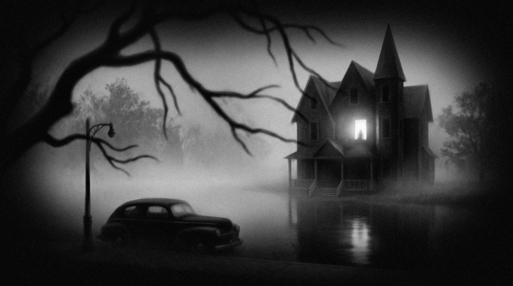
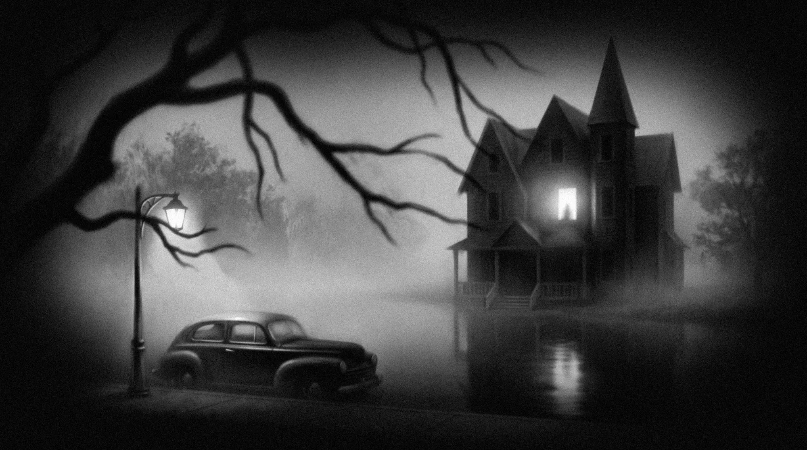

Flashlight
Click to walk. Elisa looks toward the mouse (← → or Q / D on the keyboard).


Elisa wakes up from a nightmare and wants to reach her parents. Unsettling atmosphere, jump scares and loud sounds. Best played with sound on.
Sleep Apnea
Esc or P to breathe again.
Endings